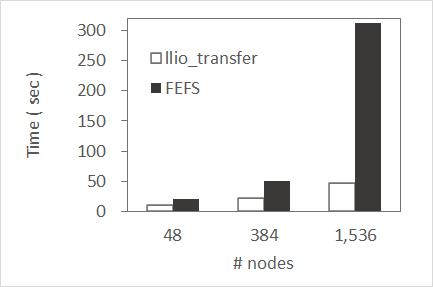

8.3. 第2階層ストレージのキャッシュ領域¶
第2階層ストレージはオープンソースのLustreの技術を基にしたFEFS（大規模および高性能な並列分散ファイルシステム）を採用しています。
ジョブ（計算ノード）から第2階層ストレージへのIOは、第2階層ストレージのキャッシュ領域を経由してアクセスされます。非同期クローズを有効にすることで、計算処理中に第2階層ストレージへの書き出しが可能となり高速化されます。詳細はジョブ投入時（pjsub --llio）のオプションを参照ください。
「第2階層ストレージのキャッシュ」は第1階層ストレージに作成されるキャッシュ領域です。
第2階層ストレージのパスにアクセスすることで、第2階層ストレージのキャッシュ（高速デバイス）経由でアクセスされます。
第2階層ストレージへ直接アクセスする場合はディスクを参照ください。
第2階層ストレージのキャッシュ領域の仕様を説明します。
第2階層ストレージのキャッシュ領域の仕様¶ 項目
特性
参照範囲
すべての計算ノードから参照できます。
生存期間
ジョブ実行可能時間制限内は保持されます。第2階層ストレージへの書出し途中でジョブ実行可能時間制限を超えるなどしてジョブが中断された場合は、第2階層ストレージのキャッシュ領域は書き出しが完了していない場合でも削除されます。書き出されなかったファイルは、未書出しファイルの一覧としてファイルに出力します。また、上記以外のタイミングで第2階層ストレージのキャッシュ領域のキャッシュが削除されるタイミングは以下となります。- ファイルを削除した場合- 第2階層ストレージのキャッシュ領域がディスクフルとなった場合(ディスクフルになった場合はLRU方式で古いものから削除される)- Direct I/O (writeとreadのいずれの場合も該当)が実行された場合
注意
8.3.1. 第2階層ストレージのキャッシュの容量¶
第1階層ストレージの領域は、入出力を担うストレージI/Oノード（SIOノード）のSSDから確保されます。 1つの計算ノードに割り当てられるSSDのサイズは1つのSIOノードが入出力を担う計算ノードの数で等分した容量になります。
「富岳」では約87GiB/nodeが使用できます。
約87GiBを、ノード内テンポラリ領域、共有テンポラリ領域、第2階層ストレージのキャッシュ領域に分割して使用します。
ジョブ実行時に第2階層ストレージのキャッシュ領域の容量を指定することはできません。 ノード内テンポラリ領域および共有テンポラリ領域の容量を指定し、残りの容量が第2階層ストレージのキャッシュ領域になります。:
第2階層ストレージのキャッシュ領域 = 87GiB - (ノード内テンポラリ領域 + 共有テンポラリ領域)
注意
第2階層ストレージのキャッシュ領域は128MiB以上の容量が必要です。容量が128MiBを下回るとジョブ投入時に以下のエラーとなります。ノード内テンポラリ領域、共有テンポラリ領域の容量を見積もる際には留意ください。
[ERR.] PJM 0049 pjsub Option argument is invalid. sharedtmp-size + localtmp-size must be less than or equal to <size>
第2階層ストレージのキャッシュ領域の容量がジョブのキャッシュ利用量に対して小さい場合、以下の事象が発生することがあります。
ジョブがエラーとなることがあります。
キャッシュミスが頻発し、IO速度が遅くなる場合があります。
8.3.2. 第2階層ストレージへの書出しタイミング¶
第2階層ストレージへの書き出しは、計算ノードからの第2階層ストレージキャッシュ領域への書き出し要求とは非同期に行われています。この非同期処理により、それぞれの処理を並列化することでIO処理を高速化しています。 計算ノードからの書き出しを同期し、各計算ノードやログインノードから情報を参照できるようにするためには、以下のいずれかの手法を選択できます。
Direct I/Oを用いて書出す。
書出し後にsync(2)またはfsync(2)を発行する。
書出し後にclose(2)する。(非同期クローズ=OFFの場合)
8.3.3. ストライプ機能¶
第2階層ストレージのキャッシュおよび第2階層ストレージに対してストライプを設定できます。
第2階層ストレージのキャッシュおよび第2階層ストレージに対してストライプを設定することにより大容量のシーケンシャルアクセスの高速化が期待できます。
第2階層ストレージのキャッシュにストライプを設定することにより、1つのファイルを複数のストレージI/O（SIO）ノードに分散して処理します。
加えて第2階層ストレージ（FEFS）にストライプを設定することにより、1つのファイルを複数のOSTに分散して処理します。
第2階層ストレージのキャッシュならびに第2階層（FEFS）に対するストライプの設定方法は異なります。
領域名 |
pjsub --llioオプション |
Lfsコマンド |
|---|---|---|
第2階層ストレージのキャッシュ |
✓ |
－ |
第2階層ストレージ |
－ |
✓ |
8.3.3.1. 第2階層ストレージのキャッシュに対するストライプ設定¶
複数の第2階層ストレージのキャッシュに分散して格納することにより、ファイルアクセスの帯域幅が向上します。ユーザはジョブ投入時に、アプリケーションのI/O特性に合わせてストライプサイズやストライプカウントを指定します。これにより、第2階層ストレージのキャッシュへの効率の良い転送が可能になります。

ストライプカウントを3に設定する例を示します。
$ pjsub --llio stripe-count=3 jobscript.sh
注釈
現在提供している環境はストライブカウントの上限が24です。
LLIOのストライプカウントのデフォルトは24です。
8.3.3.2. 第2階層ストレージに対するストライプ設定¶
大容量ファイルへのシーケンシャルなアクセスはひとつのOSTの性能に律速するため、シーケンシャルアクセスの高速化としてストライプを設定を選択できます。ストライプを設定することにより、複数のOSTに分散してファイルを配置できるため、シーケンシャルアクセスの高速化が期待できます。
【ストライプ設定】
$ lfs setstripe -c 3 ./output.file
【設定確認】
$ lfs getstripe ./output.file
output.file
lmm_stripe_count: 3
lmm_stripe_size: 1048576
lmm_pattern: 1
lmm_layout_gen: 0
lmm_stripe_offset: 5
obdidx objid objid group
5 547321 0x859f9 0
11 547341 0x85a0d 0
17 547341 0x95a0c 0
注釈
富岳は、FEFS（2ndfs）と第2階層ストレージのキャッシュ、両方をマウントしアクセスできるため、計算ノード上で以下の使い分けが必要です。
【FEFS(2ndfs)へのストライプ設定】
$ /usr/bin/lfs setstripe -c 3 ./output.file
【第2階層キャッシュ経由でストライプ設定】
$ lfs setstripe -c 3 ./output.file
第1階層ストレージのストライプサイズが第2階層ストレージのストライプサイズの倍数でない場合、第2階層ストレージの性能を引き出せない場合があります。第2階層ストレージのストライプサイズとストライプカウントは、lfsコマンドのgetstripeサブコマンドで取得でき、setstripeサブコマンドで変更できます。ただし、どちらの操作もジョブ内で実行してください。指定できるストライプサイズとストライプカウントの上限値、下限値は、第2階層ストレージ(FEFS)の仕様を確認してください。
8.3.4. 非同期クローズ/同期クローズ¶
第2階層ストレージのキャッシュを利用する場合、非同期クローズと同期クローズにより性能・データの書き込み保証に差があります。
非同期クローズ時の留意事項を示します。
非同期クローズは、クローズと非同期に計算ノード内キャッシュから、第1階層ストレージ、および第2階層ストレージへの書出す仕組みです。このため、クローズ終了の時点で、第1階層ストレージおよび第2階層ストレージへの書出しは保証されません。
ジョブの経過時間制限内であれば、ジョブ終了時のファイルの書き出しは保証されます。
計算ノードがダウンした場合やジョブの経過時間制限を超過した場合、計算ノード内キャッシュや第1階層ストレージから第2階層ストレージへの転送は中断されます。このため、キャッシュから第2階層ストレージへの書き出しは保証されません。 ジョブのファイルへの出力を保証するためには、必要に応じて同期クローズ機能の利用や、第2階層ストレージへの書出しタイミングの手法や、利用者側のプログラムでチェックポイントリスタートを実施するなど、ジョブ実行中にデータの書き出しを明示的に行います。
第2階層ストレージへの書き出しに失敗した場合は、標準エラー出力に未書出しファイルの一覧を出力します。 pjsubオプションの指定により指定した箇所に未書出しファイルの一覧を出力することも選択できます。 以下を指定した場合、path に一覧が出力されます。
$ pjsub --llio uncompleted-fileinfo-path=path,async-close=on
注釈
ジョブ終了時に第1階層ストレージ上から第2階層ストレージへの書き出しが完了できない場合、以下のようなメッセージがデフォルトでジョブの標準エラーに出力されます。
<file transfer error information> <summary> total num: 3 total size: 128000000 error: E1,E3,E8 <detail> E1 /gfs1/userA/outfile1 E1 /gfs1/userA/dir/outfile2 E3,E8 /gfs1/userA/dir/outfile3
未書出しファイルの数が1000を超えた場合は、詳細情報として次のメッセージだけが出力されます。
<file transfer error information> <summary> total num: 1000*+ total size: 1348000000+ error: E1,E3,E8 <detail> The detailed information is not output because the number of uncompleted files exceeds the upper limit (1000).
未書出しファイルの情報を確認し、ジョブの経過時間制限値の調整をお願いします。
計算ノードダウンでジョブが中断された場合、LLIOの使用の有無にかかわらず、以下のようなメッセージがジョブの標準エラーに出力されます。
<file transfer error information> <summary> total num: 0+ total size: 0+ error: <detail>
計算ノードダウンでジョブが中断されたことを確認するには、pjstatコマンドやpjstataコマンドのPC(PJM CODE)の値を確認してください。PCの値が20となっている場合は計算ノードダウンでジョブが中断したことを意味します。
8.3.5. 共通ファイル配布機能 (llio_transfer)¶
第2階層ストレージ上にある実行ファイルや設定ファイルなど、すべての計算ノードから読み込まれるファイル（共通ファイル）にはアクセスが集中します。 アクセスの集中を回避するための機能として共通ファイル配布機能を利用します。共通ファイル配布機能は第1階層ストレージ上の第2階層ストレージのキャッシュ領域に共通ファイルを配布することによりアクセスの集中を分散させます。
具体的には :command:llio_transferコマンドで共通ファイルを配布します。 共通ファイルとして扱えるのは読み取り専用のファイルだけです。 加えて 共通ファイルに関する注意事項も参照ください。
llio_transferコマンドは計算ノードで用いられるコマンドで、第2階層ストレージ上のファイルを第1階層ストレージ上の第2階層ストレージのキャッシュ領域へ配布します。 ジョブが割り当てられた各々のSIOノードの第1階層ストレージに割り当てられた第2階層ストレージのキャッシュ領域にファイルを配布します。 計算ノード上のジョブは、物理的に一番近いSIOノードに対しアクセスすることによりSIOノードのアクセス負荷を分散します。
配布操作：
/usr/bin/llio_transfer <path> [<path> ...]
削除操作：
/usr/bin/llio_transfer --purge <path> [<path> ...]
llio_transferコマンド使用例
#!/bin/bash
#PJM -L "node=382"
#PJM -L "rscgrp=small"
#PJM -L "elapse=1:00:00"
#PJM --mpi "max-proc-per-node=4"
#PJM --llio localtmp-size=10Gi
#PJM --llio sharedtmp-size=10Gi
#PJM -g groupname
#PJM -x PJM_LLIO_GFSCACHE=/vol000N
#PJM -s
### ジョブで使用する全てのSIOにa.outをコピーする（共通ファイル配布機能）
llio_transfer ./a.out
### ノード内の1プロセスから，データをコピー
mpiexec sh -c 'if [ ${PLE_RANK_ON_NODE} -eq 0 ]; then \
cp -rf ./data/ ${PJM_LOCALTMP} ; \
fi'
### ノード内テンポラリのファイル参照例
ls ${PJM_LOCALTMP}/data
### キャッシュ内のa.outを使用して実行
mpiexec -stdout-proc ./output.%j/%/1000r/stdout \
-stderr-proc ./output.%j/%/1000r/stderr \
./a.out
### a.outを第2階層ストレージのキャッシュから削除
### ジョブの途中で削除したい場合は次のようにpurgeする
llio_transfer --purge ./a.out
### ジョブの終了前にファイルresult.dataをジョブ実行時の
### ディレクトリ${PJM_JOBDIR}(第2階層ストレージのキャッシュ)に、
### ジョブID${PJM_JOBID}をつけた名前に変えて退避（必要時）
cp ${PJM_LOCALTMP}/result.data ${PJM_JOBDIR}/result_${PJM_JOBID}.data
### ジョブの終了前にファイルoutput.dataをジョブ実行時の
### ディレクトリ${PJM_JOBDIR}(第2階層ストレージのキャッシュ)に，
### ジョブID${PJM_JOBID}をつけた名前に変えて退避（必要時）
cp ${PJM_SHAREDTMP}/output.data ${PJM_JOBDIR}/output_${PJM_JOBID}.data
注意
llio_transferコマンドで第2階層ストレージのキャッシュへコピーした共通ファイルに関する留意事項を以下に列挙します。
共通ファイルに対する第2階層ストレージのキャッシュ領域経由の削除、ファイルデータ更新やファイル属性更新の操作はエラーで失敗します。
読み込みを行うだけのファイルが対象です。
転送できる共通ファイルは16,384までです。全ての計算ノードが同時にopenできる共通ファイルは1,024までです。
共通ファイルに対するファイルロックは未サポートです。
- ジョブ実行中は第2階層ストレージにある共通ファイルのコピー元の変更や削除をしないでください。コピー元を変更した場合は、第2階層ストレージのキャッシュにコピーした共通ファイルの内容が不定になる可能性があります。加えて、コピー元を削除した場合は、共通ファイルをllio_transferコマンドの
--purgeオプションを用いて削除できなくなり、結果、ジョブが終了するまで第2階層ストレージのキャッシュ領域が共通ファイルに占有されたままになります。 - ジョブスクリプト内で共通ファイルを削除する場合は、llio_transferコマンドに
--purgeオプションを指定して削除してください。rmコマンドを用いた場合、失敗し削除できません。 llio_transfer --purgeを用いて第2階層ストレージのキャッシュから共通ファイルを削除した直後は、ジョブからの共通ファイルのコピー元ファイルの削除、ファイルデータ更新やファイル属性更新の操作がエラーで失敗する場合があります。その場合は、60秒以上の時間を空けて再操作してください。
- 共通ファイルのコピー先である、第1階層ストレージの "第2階層ストレージのキャッシュ領域" には共通ファイル全体を格納できるだけの容量が必要です。第2階層ストレージのキャッシュ領域にコピーされた共通ファイルは、"第2階層ストレージのキャッシュ領域" の利用可能な容量が尽きた場合においても削除されることはありません。第2階層ストレージのキャッシュ領域の空き容量が必要な場合には、ジョブの途中で、llio_transferコマンドに
--purgeオプションを指定してキャッシュ領域から共通ファイルを削除してください。なお、第2階層ストレージのキャッシュ領域の共通ファイルは、ジョブ終了後には自動的に削除されます。 llio_transferコマンドが共通ファイルの領域を確保する前に、ジョブ内で転送元ファイルのキャッシュデータが第1階層ストレージに存在する場合、llio_transferコマンドはエラーになります。ファイルオープンをした場合にキャッシュデータが作成される場合があるため、llio_transferコマンド実行前にジョブ内でファイルオープンをしないでください。
8.3.5.1. 共通ファイルの効果¶
実行ファイルや入力ファイルなどの共有ファイルは、llio_transferコマンドを用いてプログラム実行前に配布し利用することを推奨しています。使用する計算ノードの規模が大きくなるにつれてより効果的です。参考に、共通ファイルと第2階層ストレージ上のファイルアクセスを比較した情報を示します。
多数のモジュールを必要とする実行ファイル
600ファイル以上から構成されるPythonのスクリプトを用いて、計算ノードがモジュールを読み込み起動するまでに要した時間を比較します。第2階層ストレージ上の、ある共通ファイル対するメタリクエストを処理するサーバは1台であるため、計算ノードが増加しリクエストが増大すると、処理に時間を要します。llio_transferコマンドで共通ファイルとして配布した場合は、第2階層ストレージにアクセスするのは代表のSIO1台だけとなり、リクエストの処理時間が大幅に削減されます。

大量の入力データを必要とする実行ファイル
計算ノードあたり1GBの共通ファイルを読み込むプログラムの起動時間を比較します。第2階層ストレージ上の、ある共通ファイルを読み込んだ場合に、実データを管理するサーバにアクセスが集中します。llio_transferコマンドで共通ファイルとして配布した場合は、第2階層ストレージのデータを代表のSIO1台が取得し効率よく他のSIOに配置していくため、計算ノードへ効率よくデータを届けることができ、データの転送時間が大幅に削減されます。

注意
数値はジョブ運用中に取得したものであり、システムの基礎性能を示すものではありません。
他のジョブのIO状況や割当たったノード形状、共通ファイル容量や数によって転送時間に差が発生します。
llio_transferコマンドの転送処理は非同期に行われ測定が難しいため、mpiexecコマンドでプログラムが起動し完了するまでの時間を比較しています。
8.3.5.2. 共通ファイル配布のヒント¶
プログラムが参照しているファイルを特定し、配布するためのヒントを記載します。 多数のモジュールからなるプログラムを実行する場合、全てのモジュールを共通ファイルとして配布するとプログラムの起動時間の短縮が期待されます。しかし、そのようなプログラムが参照しているファイルを全て把握することが難しい場合があります。 straceコマンドで参照ファイルを特定する例を次に示します。
- ジョブスクリプトを修正します。可能な限り、小規模のジョブで実行してください。
mkdir ./log # mpiexec -stdout-proc ./%n.output.%j/%/384r/stdout -stderr-proc ./%n.output.%j/%/384r/stderr bin/a.out mpiexec -stdout-proc ./%n.output.%j/%/384r/stdout -stderr-proc ./%n.output.%j/%/384r/stderr sh -c \ 'if [ $PMIX_RANK -eq 0 ]; then strace -ff -e trace=open,openat -o ./log/strace.${PMIX_RANK} bin/a.out else bin/a.out fi'ログが大容量になる可能性があるため、Rank=0でオープンのシステムコールに絞ります。これでも出力量が多い場合は、モジュールの読み込み後にプログラムが終了するように修正してください。
- ジョブを実行します。
- ログを確認し、openされているファイルを探します。
$ egrep -v '= \-1 ENOENT|O_DIRECTORY' ./log/strace.0.* | egrep O_RDONLY | cut -d\" -f 2 |egrep ^/vol.... /vol0004/fjuser/fj0012/job/strace/bin/a.out ...
- ファイル一覧をllio_transfer.listとして用意します。
- ジョブスクリプトを修正します。ファイル一覧を llio_transferコマンドで転送する例です。
cat ./llio_transfer.list | xargs -L 100 llio_transfer mpiexec -stdout-proc ./%n.output.%j/%/384r/stdout -stderr-proc ./%n.output.%j/%/384r/stderr bin/a.out cat ./llio_transfer.list | xargs -L 100 llio_transfer --purge
8.3.5.3. llio_transferを用いたディレクトリ単位の転送ツール（dir_transfer）¶
指定したディレクトリ配下全てのファイルを共通ファイルとして転送する llio_transferコマンドのラッパースクリプトを用意しています。配布するファイル数に注意して利用ください。参照されないファイルまで配布すると、第2階層ストレージのキャッシュ容量や実行時間の浪費となるためご注意ください。
使用方法
配布操作：
/home/system/tool/dir_transfer [-l logdirname] dir1 [dir2 [...] ]
削除操作：
/home/system/tool/dir_transfer -p [-l logdirname] dir1 [dir2 [...] ]
オプション：
-l logdirname logdirnameで指定したディレクトリに配布または削除した共通ファイル一覧を保存します。
保存ディレクトリが指定されていない場合、カレントディレクトリに一覧を保存します。
-p 配布した共通ファイルを削除します。
引数：
dir1 [dir2 [...]] 共通ファイルとして配布または削除するディレクトリを指定します。
例）配布操作
mkdir ./log
/home/system/tool/dir_transfer -l ./log ./libA ./libB
ディレクトリ ./libA および ./libB が転送され、ログが ./log 配下に出力されます。
例）削除操作
mkdir ./log
/home/system/tool/dir_transfer -p -l ./log ./libA ./libB
配布操作または削除操作を行った際に、-l で指定したディレクトリにファイル一覧を作成します。-l の指定がない場合は、カレントディレクトリに出力されます。ジョブ終了後、必要に応じて削除してください。
$ ls ./log
llio_transfer.6860009.20211309.list
llio_transfer.6860009.20211318.purge.list
8.3.6. ジョブ投入時（pjsub --llio）のオプション¶
第2階層ストレージのキャッシュに関連するオプションを示します。
pjsubオプション |
説明 |
|---|---|
sio-read-cache={on|off} |
第2階層ストレージから計算ノードへ読み込んだファイルを第1階層ストレージにキャッシュにするか否かの動作を指定します。
on: キャッシュします。（デフォルト値）
off: キャッシュしません。
|
stripe-count=count |
複数の第2階層ストレージのキャッシュに分散する際のファイル当たりのストライプ数を指定します。（デフォルト24） |
stripe-size=size |
複数の第2階層ストレージのキャッシュに分散する際のストライプサイズを指定します。 |
async-close={on|off} |
ファイルのクローズを非同期クローズにするか否かの動作を指定します。2階層ストレージのキャッシュから第2階層ストレージ（FEFS）に対する同期/非同期クローズ指定します。本オプションによりデータの書き出し完了の保証に影響がありますので注意が必要です。
on: 非同期クローズ
off: 同期クローズ（デフォルト値）
on(非同期クローズ)を指定した場合、ファイルのクローズ時に書出し完了は保証されません。
off(同期クローズ)を指定した場合、ファイルのクローズ時に書出し完了は保証されます。
|
perf[,perf-path=path] |
LLIO性能情報をファイルに出力します。
出力先はジョブ投入時のカレントディレクトリ配下で、ファイル名はジョブACL機能で定義されている名前です。なお、パラメーター perf-pathで出力先のファイルを指定できます。
|
uncompleted-fileinfo-path=path |
ジョブ終了時に、第2階層ストレージへの書出しが完了していないファイルの情報の出力先を指定します。指定が無い場合は標準エラー出力に書き出します。 |